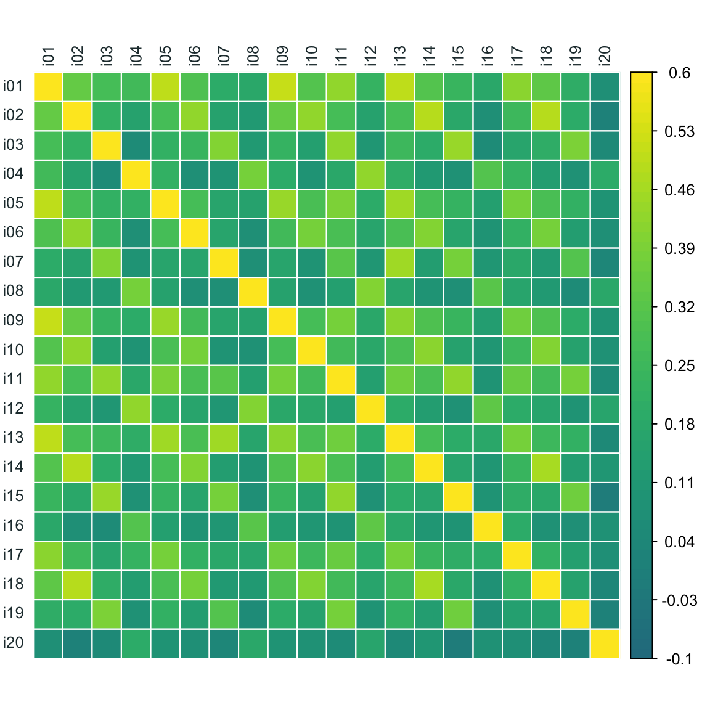
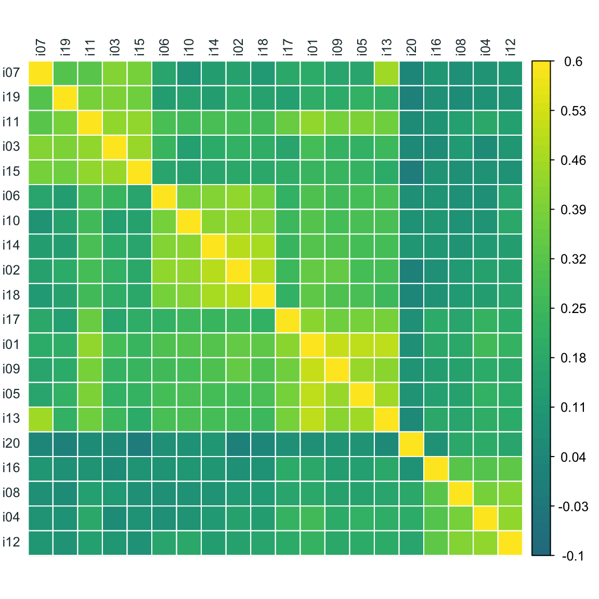
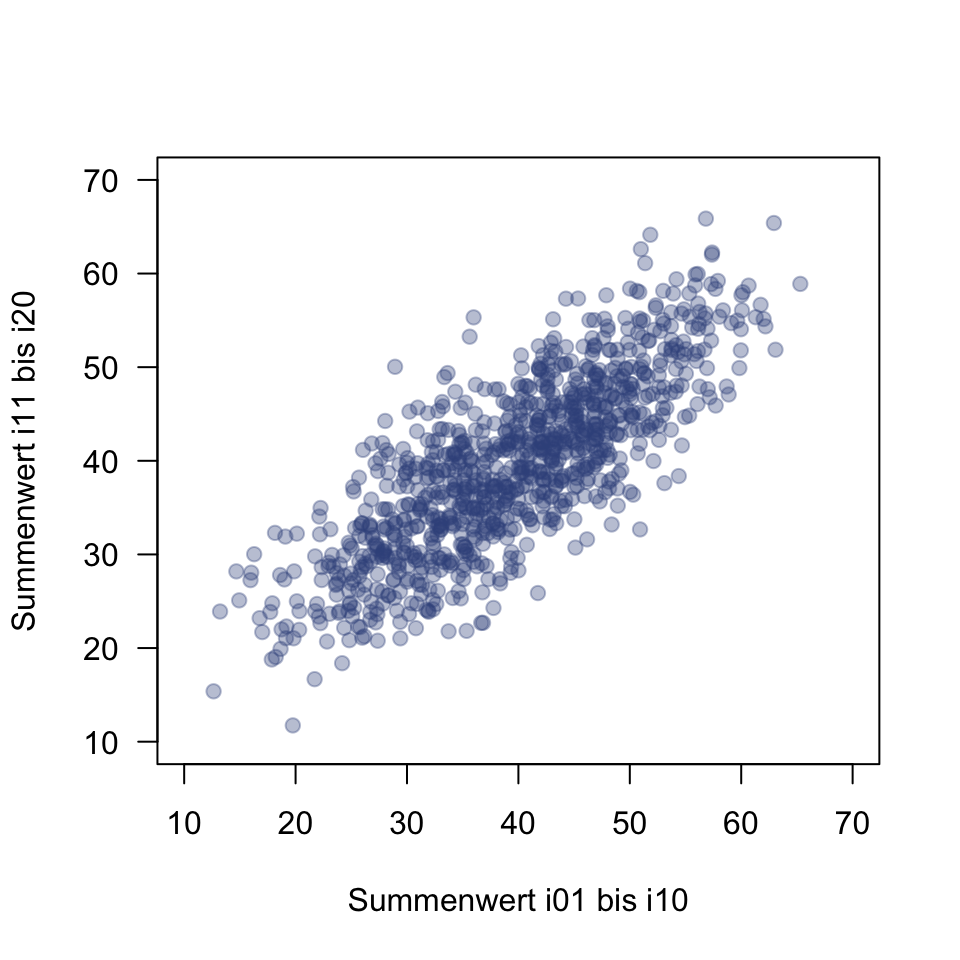
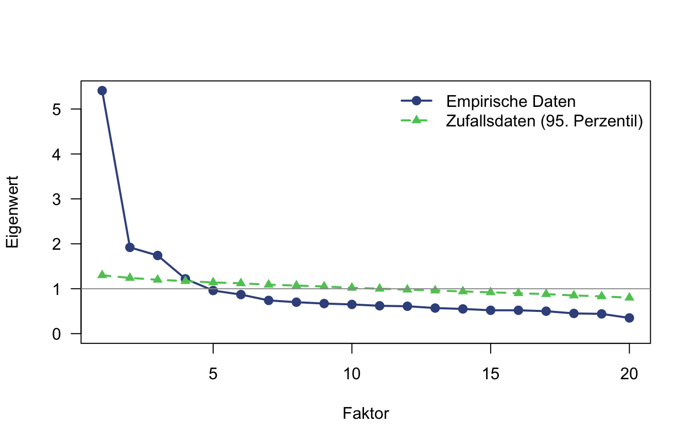
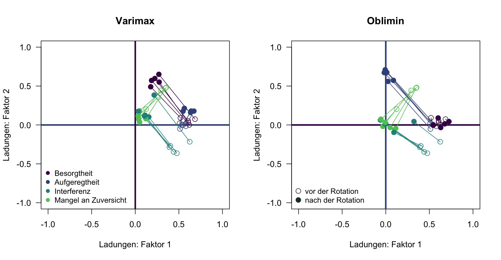
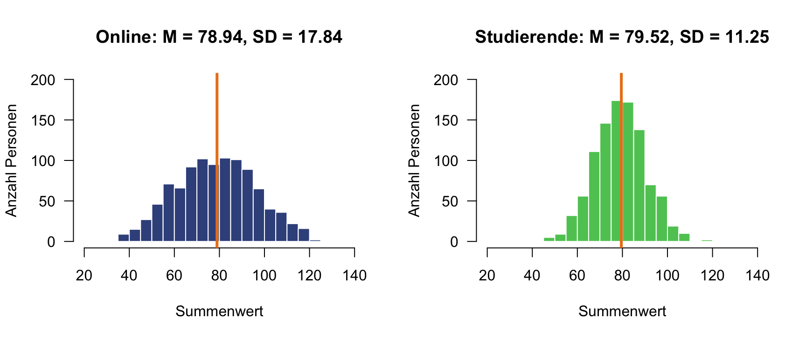
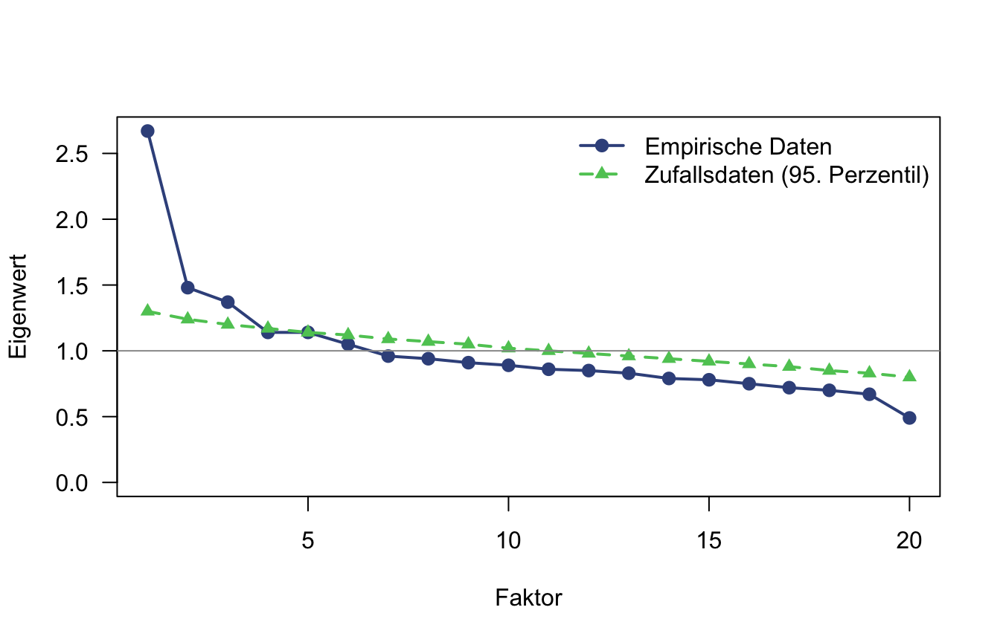

8 Exploratorische Faktorenanalyse
Ein Forschungsteam hat einen neuen Fragebogen zur Prüfungsangst entwickelt und online an 1000 Personen erprobt: Studierende verschiedener Fächer und Hochschulen, Schüler:innen der Oberstufe sowie Personen in Aus- und Weiterbildung. Fragebogen und Daten sind fiktiv; die Daten sind simuliert.
Das Team stützt sich auf das Vier-Komponenten-Modell der Prüfungsangst, auf dem auch der Prüfungsangstfragebogen beruht (PAF, Hodapp et al., 2011):
- Besorgtheit: Gedanken an Misserfolg und seine Folgen
- Aufgeregtheit: körperliche Anspannung und Nervosität
- Interferenz: aufgabenfremde Gedanken, die die Konzentration stören
- Mangel an Zuversicht: geringes Vertrauen in die eigene Leistungsfähigkeit
Der Fragebogen hat 20 Items, die Antwortskala reicht von 1 („trifft überhaupt nicht zu“) bis 7 („trifft voll und ganz zu“). Die Items stehen in der Reihenfolge des Fragebogens:
| Item | Wortlaut |
|---|---|
| i01 | Ich mache mir Sorgen, dass ich durchfallen könnte. |
| i02 | Vor Prüfungen habe ich Herzklopfen. |
| i03 | In Prüfungen schweifen meine Gedanken ab. |
| i04 | Ich zweifle an meinen Fähigkeiten, wenn eine Prüfung ansteht. |
| i05 | Ich grüble darüber nach, welche Folgen eine schlechte Note für mich hätte. |
| i06 | In Prüfungen bin ich angespannt. |
| i07 | In Prüfungen fällt mir Gelerntes nicht ein, obwohl ich es eigentlich weiß. |
| i08 | Ich habe wenig Vertrauen in meine Leistung in Prüfungen. |
| i09 | Ich befürchte, schlechter abzuschneiden als die anderen. |
| i10 | Vor Prüfungen habe ich ein flaues Gefühl im Magen. |
| i11 | In Prüfungen lenken mich Gedanken an ein mögliches Scheitern von den Aufgaben ab. |
| i12 | Ich traue mir in Prüfungen wenig zu. |
| i13 | Ich befürchte, dass mir in der Prüfung das Gelernte nicht einfällt. |
| i14 | In Prüfungen fühle ich mich nervös. |
| i15 | In Prüfungen denke ich an Dinge, die mit den Aufgaben nichts zu tun haben. |
| i16 | Ich fühle mich Prüfungen nicht gewachsen. |
| i17 | Ich mache mir Gedanken darüber, was andere von mir denken, wenn ich versage. |
| i18 | In Prüfungen werden meine Hände feucht. |
| i19 | In Prüfungen fällt es mir schwer, mich zu konzentrieren. |
| i20 | Ich weiß vorher meist nicht, wie eine Prüfung für mich ausgehen wird. |
Aufgabe 1 (Theorie und Erwartung)
- Wie viele Dimensionen würden Sie theoretisch erwarten?
TippLösung
Vier.
- Erwarten Sie, dass die Dimensionen miteinander zusammenhängen? Begründen Sie Ihre Antwort.
TippLösung
Ja, positiv.
- Suchen Sie aus Tabelle 1 die Items heraus, die Ihrer Meinung nach die Komponente Besorgtheit messen.
TippLösung
Z. B.: i01, i05, i09, i13, i17
Aufgabe 2 (Visualisierung der Korrelationsmatrix) Die Abbildung zeigt die Korrelationen der 20 Items in der Reihenfolge, in der sie im Fragebogen vorkommen. Die Diagonale (Korrelation eines Items mit sich selbst, \(r = 1\)) hat die hellste Farbe.
- Warum ist es hier schwierig, eine Struktur zu erkennen?
TippLösung
Bei 20 Items gibt es 190 Korrelationen; ohne passende Sortierung lassen sich Gruppen kaum erkennen. Man könnte ein regelmäßiges Streifenmuster vermuten: Jedes vierte Item scheint zusammenzugehören.
Nun sind die Items mittels hierarchischer Clusteranalyse so sortiert, dass hoch korrelierende Items nebeneinanderstehen:

- Wie viele Itemgruppen (Blöcke) erkennen Sie, und welche Items gehören Ihrer Meinung nach zusammen?
TippLösung
Vier Blöcke:
- i07, i19, i11, i03, i15
- i06, i10, i14, i02, i18
- i17, i01, i09, i05, i13
- i20, i16, i08, i04, i12
i20 korreliert nur schwach mit den Items seines Blocks.
- Vergleichen Sie die Blöcke mit Ihrer Erwartung aus Aufgabe 1, Teil a. Stimmen Anzahl und Zusammensetzung überein?
TippLösung
Man kann vier Blöcke vermuten.
- Finden Sie Ihre Erwartung über die Komponente Besorgtheit aus Aufgabe 1, Teil c, in den Blöcken wieder?
TippLösung
Ja. Gelesen von links oben nach rechts unten: Block 3. Item i20 sollte man im Auge behalten.
- Hängen die Blöcke untereinander zusammen? Woran sehen Sie das?
TippLösung
Ja. Die Felder zwischen den Blöcken sind nicht dunkel (nahe null); v. a. zwischen Block 2 und 3. Das passt zu Aufgabe 1, Teil b.
- Wie viele Faktoren würden Sie allein aufgrund der Abbildung extrahieren?
TippLösung
Vier.
Aufgabe 3 (Voraussetzungen) Die Stichprobe umfasst N = 1000 Personen, der Fragebogen 20 Items. Das Kaiser-Meyer-Olkin-Kriterium (KMO) ergibt:
psych::KMO(items)Kaiser-Meyer-Olkin factor adequacy
Call: psych::KMO(r = items)
Overall MSA = 0.89
MSA for each item =
i01 i02 i03 i04 i05 i06 i07 i08 i09 i10 i11 i12 i13 i14 i15 i16
0.92 0.89 0.87 0.83 0.92 0.92 0.76 0.82 0.93 0.91 0.92 0.83 0.85 0.91 0.85 0.85
i17 i18 i19 i20
0.94 0.91 0.89 0.72 - Interpretieren Sie den KMO-Koeffizienten.
TippLösung
KMO = 0.89 > .80: gut (siehe Kriterien der Vorlesung).
- Welche Hypothese prüft der Bartlett-Test?
TippLösung
Die Nullhypothese, dass die Korrelationsmatrix in der Population eine Einheitsmatrix ist, also alle Korrelationen zwischen den Items null sind.
Ein Bartlett-Test der Korrelationsmatrix gibt folgendes Ergebnis aus:
psych::cortest.bartlett(cor(items), n = nrow(items))$chisq
[1] 5341.337
$p.value
[1] 0
$df
[1] 190- Interpretieren Sie das Ergebnis des Bartlett-Tests.
TippLösung
\(\chi^2(190) = 5341.34\), \(p < .001\): Nullhypothese wird verworfen; nicht alle Korrelationen sind null.
Die Abbildung zeigt für jede Person den Summenwert der Items i01 bis i10 und den Summenwert der Items i11 bis i20. Die Punkte sind leicht versetzt, damit gleiche Werte nicht aufeinanderliegen.

- Gibt es Ausreißerwerte?
TippLösung
Nein.
- Reichen Stichprobengröße und Itemzahl Ihrer Meinung nach aus?
TippLösung
Ja. N = 1000 > 500 > 250, also über dem Minimum von 250 und der Empfehlung von 500. Laut Theorie messen je fünf Items eine Komponente.
Aufgabe 4 (Matrix und Extraktionsmethode)
- Welche Matrix würden Sie für die Analyse der Faktoren heranziehen?
TippLösung
Korrelationsmatrix der Items.
- Im Folgenden wird eine Maximum-Likelihood-Faktorenanalyse durchgeführt. Was ist die Grundidee der Schätzmethode und was wird dabei maximiert?
TippLösung
Die Likelihood: Ladungen und Fehlervarianzen werden so geschätzt, dass die beobachteten Daten unter dem Modell am plausibelsten sind. Die modellimplizierte Korrelationsmatrix \(\Sigma(\theta)\) liegt dann möglichst nah an der empirischen Korrelationsmatrix \(S\).
- Warum führen Sie keine Hauptkomponentenanalyse durch?
TippLösung
Die PCA nimmt an, dass sich die Gesamtvarianz der Items vollständig durch die Komponenten aufklären lässt (Einsen auf der Diagonalen der Korrelationsmatrix, kein Messfehler). Die Faktorenanalyse setzt den Fokus auf die gemeinsame Varianz; ein Teil jeder Itemvarianz bleibt spezifisch (Spezifität und Messfehler). Die PCA dient v. a. der Datenreduktion.
Aufgabe 5 (Anzahl der Faktoren) Die Tabelle zeigt die Eigenwerte der Korrelationsmatrix (Spalte Empirisch) und für die Parallelanalyse das 95. Perzentil der Eigenwerte aus 1000 Zufallsdatensätzen mit derselben Personen- und Itemzahl (Spalte Zufall_95), hier für die ersten zehn Faktoren:
Faktor Empirisch Zufall_95
1 5.41 1.30
2 1.92 1.24
3 1.74 1.20
4 1.22 1.17
5 0.96 1.14
6 0.87 1.12
7 0.74 1.09
8 0.70 1.07
9 0.67 1.05
10 0.65 1.02
- Wie viele Faktoren extrahieren Sie nach dem Kaiser-Guttman-Kriterium?
TippLösung
Vier.
- Wie viele Faktoren extrahieren Sie mithilfe des Screeplots?
TippLösung
Plausibel sind u. a. vier Faktoren.
- Wie viele Faktoren extrahieren Sie mithilfe der Parallelanalyse?
TippLösung
Vier. Die ersten vier empirischen Eigenwerte liegen über denen der Zufallsdaten.
Aufgabe 6 (Kennwerte der unrotierten Lösung) Gegeben sei der R-Output einer Maximum-Likelihood-Faktorenanalyse mit vier Faktoren:
fit_none <- psych::fa(items, nfactors = 4, fm = "ml", rotate = "none")
print(fit_none$loadings, digits = 2, cutoff = 0)
Loadings:
ML1 ML2 ML3 ML4
i01 0.68 0.07 0.02 -0.30
i02 0.58 -0.02 -0.38 0.16
i03 0.48 -0.36 0.27 0.23
i04 0.35 0.47 0.23 0.10
i05 0.61 0.05 0.03 -0.29
i06 0.51 -0.05 -0.28 0.13
i07 0.40 -0.27 0.31 0.09
i08 0.29 0.44 0.24 0.20
i09 0.61 0.03 -0.01 -0.24
i10 0.51 0.02 -0.33 0.08
i11 0.62 -0.22 0.19 -0.01
i12 0.35 0.48 0.19 0.23
i13 0.62 0.00 0.11 -0.24
i14 0.54 -0.01 -0.38 0.14
i15 0.44 -0.35 0.28 0.17
i16 0.26 0.36 0.19 0.11
i17 0.52 0.09 0.06 -0.21
i18 0.54 0.01 -0.36 0.16
i19 0.39 -0.29 0.23 0.15
i20 0.12 0.20 0.05 0.07
ML1 ML2 ML3 ML4
SS loadings 4.84 1.29 1.15 0.66
Proportion Var 0.24 0.06 0.06 0.03
Cumulative Var 0.24 0.31 0.36 0.40
HinweisHinweis
SS loadings ist die Summe der quadrierten Ladungen eines Faktors, also sein Eigenwert. Er ist kleiner als der Eigenwert in Aufgabe 5: Dort stammen die Eigenwerte aus der Korrelationsmatrix (wie bei der PCA), hier aus der Faktorenanalyse, die nur die gemeinsame Varianz erklärt.
- Wie hoch ist die Ladung von Item i01 auf Faktor ML1? Interpretieren Sie das Ergebnis.
TippLösung
\(\lambda_{11} = 0.68\). Bei unkorrelierten Faktoren gibt die Ladung die Korrelation zwischen Item und Faktor wieder: i01 lädt hoch auf ML1. Gegeben der Daten, scheint das Item die Komponente Besorgtheit zu messen.
- Berechnen Sie die Kommunalität von Item i11. Interpretieren Sie das Ergebnis.
TippLösung
\(h^2 \approx 0.47\): 47 % der Varianz von i11 werden durch die vier Faktoren erklärt.
- Berechnen Sie die Spezifität von Item i11. Interpretieren Sie das Ergebnis.
TippLösung
\(u^2 \approx 0.53\): 53 % der Varianz von i11 teilt das Item mit keinem anderen Item (spezifische Varianz und Messfehler).
- Welchen Eigenwert hat Faktor ML1? Welchen Anteil der Varianz aller Items erklärt er?
TippLösung
Eigenwert 4.84; ML1: 24 % der Varianz aller 20 Items.
- Welchen Anteil der Varianz aller Items erklärt der Faktor ML1?
TippLösung
24 % der Varianz aller 20 Items.
- Welchen Anteil der Varianz aller Items erklären die vier Faktoren zusammen?
TippLösung
40 %.
- Liegt eine Einfachstruktur vor? Begründen Sie Ihre Antwort.
TippLösung
Nein. Diffuses Ladungsmuster.
Aufgabe 7 (Rotation) Dieselbe Analyse wird nun orthogonal (Varimax) und oblique (Oblimin) rotiert. Die Abbildung zeigt die Ladungen der Items auf den ersten beiden Faktoren vor der Rotation (Kreise, aus Aufgabe 6) und nach der Rotation (Punkte); die Linien verbinden die Lage eines Items vor und nach der Rotation. Die Farben zeigen die Komponente, für die das Item geschrieben wurde (Aufgabe 1, Teil c). Jede Achse hat die Farbe der Komponente, die der Faktor nach der Rotation abbildet.

HinweisHinweis
Dieselbe Oblimin-Rotation in drei Dimensionen (Faktoren 1 bis 3). Ziehen Sie mit der Maus, um die Abbildung zu drehen; mit dem Mausrad zoomen Sie. Die graue Fläche ist die Ebene der Faktoren 1 und 2, also die rechte Abbildung oben; die hellere Fläche ist die Ebene der Faktoren 2 und 3. Offene Kreise zeigen die Lage vor, gefüllte Punkte nach der Rotation. Die Items von Faktor 4 (Mangel an Zuversicht) liegen nahe am Ursprung. Wie oben sind die korrelierten Faktoren als rechtwinklige Achsen dargestellt.
- Was verändert die Rotation an der Lage der Items?
TippLösung
Die Items wandern zu den Achsen oder dem Ursprung.
Welche Rotation kommt einer Einfachstruktur näher?
TippLösung
Nach Oblimin-Rotation liegen die Items enger an den Koordinatenachsen als bei Varimax; Oblimin kommt einer Einfachstruktur näher.
Die zugehörigen R-Ausgaben, bei der Varimax-Lösung:
fit_varimax <- psych::fa(items, nfactors = 4, fm = "ml", rotate = "varimax")
print(fit_varimax$loadings, digits = 2, cutoff = 0)
Loadings:
ML3 ML1 ML4 ML2
i01 0.27 0.65 0.18 0.18
i02 0.67 0.18 0.13 0.09
i03 0.16 0.10 0.67 0.04
i04 0.05 0.18 0.04 0.61
i05 0.22 0.60 0.17 0.14
i06 0.55 0.18 0.16 0.06
i07 0.03 0.17 0.55 0.06
i08 0.04 0.07 0.07 0.60
i09 0.27 0.55 0.17 0.13
i10 0.56 0.21 0.07 0.08
i11 0.22 0.38 0.52 0.09
i12 0.12 0.08 0.07 0.65
i13 0.19 0.57 0.26 0.15
i14 0.64 0.18 0.10 0.08
i15 0.11 0.12 0.62 0.03
i16 0.03 0.11 0.05 0.48
i17 0.18 0.49 0.14 0.18
i18 0.63 0.16 0.11 0.10
i19 0.11 0.11 0.54 0.04
i20 0.05 0.04 -0.01 0.25
ML3 ML1 ML4 ML2
SS loadings 2.26 2.09 1.97 1.62
Proportion Var 0.11 0.10 0.10 0.08
Cumulative Var 0.11 0.22 0.32 0.40- Berechnen Sie die Kommunalität von i11 aus den Varimax-Ladungen. Vergleichen Sie sie mit Aufgabe 6, Teil b.
TippLösung
\(h^2 \approx 0.47\), wie ohne Rotation. Eine orthogonale Rotation teilt die erklärte Varianz nur “anders” auf die Faktoren auf.
Gegeben sei die R-Ausgabe der Oblimin-Lösung inklusive Zwischen faktorkorrelationen darunter:
fit_oblimin <- psych::fa(items, nfactors = 4, fm = "ml", rotate = "oblimin")
print(fit_oblimin$loadings, digits = 2, cutoff = 0)
Loadings:
ML1 ML2 ML3 ML4
i01 0.72 0.04 -0.02 0.02
i02 -0.01 0.71 0.02 0.00
i03 -0.06 0.06 0.70 0.01
i04 0.11 -0.04 -0.04 0.60
i05 0.68 0.01 -0.02 -0.01
i06 0.03 0.56 0.07 -0.01
i07 0.09 -0.10 0.56 0.02
i08 -0.03 -0.02 0.03 0.63
i09 0.60 0.09 0.00 -0.01
i10 0.09 0.57 -0.05 0.00
i11 0.32 0.04 0.44 -0.01
i12 -0.06 0.07 0.01 0.67
i13 0.63 -0.03 0.10 0.02
i14 0.01 0.68 -0.01 0.00
i15 -0.01 0.01 0.65 -0.01
i16 0.05 -0.03 0.00 0.48
i17 0.54 0.00 -0.01 0.07
i18 -0.02 0.67 0.00 0.03
i19 0.00 0.02 0.55 0.00
i20 -0.01 0.03 -0.04 0.25
ML1 ML2 ML3 ML4
SS loadings 2.18 2.09 1.75 1.50
Proportion Var 0.11 0.10 0.09 0.08
Cumulative Var 0.11 0.21 0.30 0.38round(fit_oblimin$Phi, 2) ML1 ML2 ML3 ML4
ML1 1.00 0.59 0.50 0.41
ML2 0.59 1.00 0.37 0.26
ML3 0.50 0.37 1.00 0.18
ML4 0.41 0.26 0.18 1.00- Quadrieren und summieren Sie die Oblimin-Ladungen von i11. Erhalten Sie die Kommunalität? Warum (nicht)?
TippLösung
Nein: 0.30 statt 0.47. Bei korrelierten Faktoren sind die Ladungen keine Korrelationen, sondern semipartielle standardisierte Regressionsgewichte. Ein Teil der erklärten Varianz geht auf die Korrelation der Faktoren zurück.
- Interpretieren Sie die Faktorkorrelationen der Oblimin-Lösung. Welche Faktoren hängen am stärksten zusammen, welche am schwächsten? Passt das zu Aufgabe 1, Teil b?
TippLösung
Alle Faktorkorrelationen sind positiv (0.18 bis 0.59). Am stärksten hängen ML1 und ML2 zusammen (0.59), am schwächsten ML3 und ML4 (0.18). Das passt zur Erwartung korrelierter Komponenten.
- Warum zeigt die Varimax-Lösung größere Nebenladungen als die Oblimin-Lösung?
TippLösung
Varimax legt die Faktorkorrelationen auf null fest. Die tatsächlich vorhandenen Zusammenhänge der Faktoren spiegeln sich in den Nebenladungen wieder (bei Varimax bis 0.27, bei Oblimin fast alle zwischen −0.10 und 0.10; Ausnahme in beiden Lösungen: i11).
- Für welche Rotationsmethode würden Sie sich entscheiden? Begründen Sie Ihre Wahl.
TippLösung
Die oblique Rotation (Oblimin): Theorie und Daten sprechen für korrelierte Faktoren (bis 0.59). Zudem ist die Lösung einfacher zu interpretieren.
Aufgabe 8 (Modellevaluation) Wie gut erklärt die Oblimin-Lösung die Korrelationen der Items? Die Ausgaben zeigen für die Spalten i05 bis i08 die empirischen Korrelationen \(S\) und die modellimplizierten Korrelationen \(\Sigma(\theta)\):
round(fit_oblimin$r[, 5:8], 2) i05 i06 i07 i08
i01 0.50 0.30 0.19 0.18
i02 0.27 0.43 0.14 0.11
i03 0.21 0.24 0.40 0.11
i04 0.22 0.07 0.09 0.38
i05 1.00 0.28 0.16 0.14
i06 0.28 1.00 0.16 0.07
i07 0.16 0.16 1.00 0.07
i08 0.14 0.07 0.07 1.00
i09 0.44 0.25 0.16 0.15
i10 0.28 0.38 0.09 0.07
i11 0.39 0.28 0.32 0.14
i12 0.18 0.16 0.10 0.40
i13 0.45 0.28 0.45 0.17
i14 0.27 0.41 0.12 0.09
i15 0.22 0.17 0.38 0.06
i16 0.14 0.09 0.10 0.32
i17 0.38 0.21 0.18 0.16
i18 0.28 0.38 0.11 0.11
i19 0.21 0.13 0.30 0.05
i20 0.09 0.06 0.03 0.17round(fit_oblimin$model[, 5:8], 2) i05 i06 i07 i08
i01 0.50 0.30 0.23 0.18
i02 0.29 0.43 0.13 0.10
i03 0.21 0.21 0.40 0.09
i04 0.21 0.10 0.09 0.39
i05 0.45 0.26 0.21 0.15
i06 0.26 0.36 0.14 0.08
i07 0.21 0.14 0.34 0.09
i08 0.15 0.08 0.09 0.38
i09 0.44 0.28 0.21 0.14
i10 0.28 0.36 0.10 0.09
i11 0.38 0.28 0.37 0.13
i12 0.18 0.13 0.10 0.41
i13 0.45 0.26 0.26 0.16
i14 0.28 0.40 0.11 0.09
i15 0.21 0.19 0.37 0.07
i16 0.15 0.08 0.08 0.30
i17 0.38 0.22 0.18 0.16
i18 0.27 0.40 0.12 0.11
i19 0.19 0.17 0.32 0.07
i20 0.07 0.05 0.02 0.15- Berechnen Sie das Residuum \(D = S - \Sigma(\theta)\) für die Items i13 und i07.
TippLösung
\(D \approx 0.19\)
Die Residualmatrix \(D\) für dieselben Spalten:
round(fit_oblimin$residual[, 5:8], 2) i05 i06 i07 i08
i01 -0.01 0.00 -0.04 0.00
i02 -0.02 0.00 0.01 0.01
i03 0.00 0.02 0.00 0.03
i04 0.00 -0.03 -0.01 -0.01
i05 0.55 0.01 -0.05 0.00
i06 0.01 0.64 0.02 -0.02
i07 -0.05 0.02 0.66 -0.02
i08 0.00 -0.02 -0.02 0.62
i09 0.00 -0.03 -0.05 0.01
i10 0.00 0.02 -0.01 -0.02
i11 0.01 0.00 -0.04 0.01
i12 0.00 0.03 0.01 -0.01
i13 0.01 0.02 0.19 0.01
i14 0.00 0.00 0.01 0.00
i15 0.01 -0.02 0.01 -0.01
i16 -0.01 0.02 0.02 0.02
i17 0.00 -0.01 0.00 -0.01
i18 0.01 -0.02 0.00 0.01
i19 0.03 -0.04 -0.02 -0.02
i20 0.02 0.01 0.01 0.02- Residuen über 0.1 oder unter −0.1 deuten auf Abweichungen zwischen Modell und Daten hin. Welche Residuen außerhalb der Diagonalen erfüllen dieses Kriterium?
TippLösung
Nur das Residuum von i13 und i07 (0.19). Auch in der vollständigen Residualmatrix ist es das einzige; alle anderen liegen zwischen −0.05 und 0.05.
- Schauen Sie sich die Formulierungen von i07 und i13 (Tabelle 1) an. Warum korrelieren die beiden Items höher, als das Modell vorhersagt?
TippLösung
Empirisch korrelieren i07 und i13 zu 0.45, das Modell sagt nur 0.26 vorher (\(D = 0.19\)). Beide Items fragen nach demselben spezifischen Inhalt: dass Gelerntes in der Prüfung nicht abrufbar ist, einmal als Befürchtung (i13), einmal als Erleben (i07). Diese gemeinsame spezifische Varianz erklären die vier Faktoren nicht.
- Was steht auf den Diagonalen von \(\Sigma(\theta)\) und \(D\)?
TippLösung
Auf der Diagonalen von \(\Sigma(\theta)\) die Kommunalitäten \(h^2\), auf der Diagonalen von \(D\) die Spezifitäten \(u^2 = 1 - h^2\).
- Wie beurteilen Sie die Modellanpassung insgesamt?
TippLösung
Gut. Bis auf ein Itempaar liegen alle Residuen nahe null.
Aufgabe 9 (Interpretation) Die Oblimin-Lösung aus Aufgabe 7, die Items nach Faktoren sortiert:
print(fit_oblimin$loadings, digits = 2, cutoff = 0, sort = TRUE)
Loadings:
ML1 ML2 ML3 ML4
i01 0.72 0.04 -0.02 0.02
i05 0.68 0.01 -0.02 -0.01
i09 0.60 0.09 0.00 -0.01
i13 0.63 -0.03 0.10 0.02
i17 0.54 0.00 -0.01 0.07
i02 -0.01 0.71 0.02 0.00
i06 0.03 0.56 0.07 -0.01
i10 0.09 0.57 -0.05 0.00
i14 0.01 0.68 -0.01 0.00
i18 -0.02 0.67 0.00 0.03
i03 -0.06 0.06 0.70 0.01
i07 0.09 -0.10 0.56 0.02
i15 -0.01 0.01 0.65 -0.01
i19 0.00 0.02 0.55 0.00
i04 0.11 -0.04 -0.04 0.60
i08 -0.03 -0.02 0.03 0.63
i12 -0.06 0.07 0.01 0.67
i11 0.32 0.04 0.44 -0.01
i16 0.05 -0.03 0.00 0.48
i20 -0.01 0.03 -0.04 0.25
ML1 ML2 ML3 ML4
SS loadings 2.18 2.09 1.75 1.50
Proportion Var 0.11 0.10 0.09 0.08
Cumulative Var 0.11 0.21 0.30 0.38- Vergleichen Sie die Lösung mit Ihrer Zuordnung aus Aufgabe 1, Teil c, und mit den Blöcken aus Aufgabe 2, Teil b.
TippLösung
Sie stimmen überein. Die vier Faktoren entsprechen den vier Komponenten und den vier Blöcken der sortierten Korrelationsmatrix:
- ML1: Besorgtheit (i01, i05, i09, i13, i17)
- ML2: Aufgeregtheit (i02, i06, i10, i14, i18)
- ML3: Interferenz (i03, i07, i11, i15, i19)
- ML4: Mangel an Zuversicht (i04, i08, i12, i16, i20)
Aufgabe 10 (Stichprobenabhängigkeit) Das Team legt denselben Fragebogen 1000 Psychologiestudierenden im ersten Semester an mehreren Universitäten vor. Die Studierenden sind sich ähnlicher als die Personen der Online-Stichprobe: gleiches Fach, ähnliches Alter, dieselben Prüfungen.
- Die Summenwerte (alle 20 Items) in beiden Stichproben; die orange Linie markiert den Mittelwert:

- Vergleichen Sie die Summenwerte der beiden Stichproben.
TippLösung
Bei fast gleichem Mittelwert (79.52 und 78.94) streuen die Summenwerte der Studierenden deutlich weniger (SD 11.25 statt 17.84).
- Erwarten Sie in dieser Stichprobe dieselbe Faktorenstruktur? Begründen Sie Ihre Vermutung, bevor Sie die Ausgaben ansehen.
TippLösung
Nein. Sind sich die Personen ähnlicher, unterscheiden sich ihre Werte weniger deutlich, und die Korrelationen werden kleiner.
Eigenwerte (die ersten zehn) und Screeplot mit Parallelanalyse in der Studierendenstichprobe:
Faktor Empirisch Zufall_95
1 2.67 1.30
2 1.48 1.24
3 1.37 1.20
4 1.14 1.17
5 1.14 1.14
6 1.05 1.12
7 0.96 1.09
8 0.94 1.07
9 0.91 1.05
10 0.89 1.02
- Wie viele Faktoren würden Sie hier nach dem Kaiser-Guttman-Kriterium extrahieren, wie viele nach der Parallelanalyse? Vergleichen Sie mit Aufgabe 5.
TippLösung
Kaiser-Guttman-Kriterium: sechs, Parallelanalyse: drei (der vierte Eigenwert 1.14 liegt unter 1.17). In der Online-Stichprobe ergaben beide vier. Das Kaiser-Guttman-Kriterium überschätzt hier die Zahl der Faktoren: Weil die Items schwächer korrelieren, liegen viele Eigenwerte knapp über 1.
Gegeben sei die Oblimin-Lösung mit vier Faktoren in der Studierendenstichprobe:
fit_students <- psych::fa(students, nfactors = 4, fm = "ml", rotate = "oblimin")
print(fit_students$loadings, digits = 2, cutoff = 0)
Loadings:
ML1 ML2 ML3 ML4
i01 0.41 0.10 0.00 0.07
i02 0.39 0.03 -0.04 0.00
i03 0.06 -0.02 0.31 0.06
i04 0.01 -0.01 -0.05 0.59
i05 0.33 0.04 0.11 0.02
i06 0.38 0.00 -0.04 -0.04
i07 -0.11 0.35 0.38 0.04
i08 0.02 -0.02 0.07 0.39
i09 0.26 0.03 0.07 0.05
i10 0.30 -0.02 0.05 -0.01
i11 0.19 0.02 0.33 0.04
i12 -0.03 -0.01 0.05 0.45
i13 0.02 1.00 -0.01 0.00
i14 0.34 0.04 0.05 -0.06
i15 0.11 -0.07 0.45 0.00
i16 0.09 -0.01 0.08 0.19
i17 0.31 0.01 0.06 0.08
i18 0.29 -0.05 0.08 -0.04
i19 0.02 -0.06 0.41 -0.06
i20 0.02 0.06 -0.05 0.13
ML1 ML2 ML3 ML4
SS loadings 1.11 1.15 0.78 0.80
Proportion Var 0.06 0.06 0.04 0.04
Cumulative Var 0.06 0.11 0.15 0.19round(fit_students$Phi, 2) ML1 ML2 ML3 ML4
ML1 1.00 0.21 0.30 0.19
ML2 0.21 1.00 0.30 0.07
ML3 0.30 0.30 1.00 0.11
ML4 0.19 0.07 0.11 1.00- Vergleichen Sie die Ladungen und die Faktorkorrelationen der Studierendenstichprobe mit der Oblimin-Lösung der Online-Stichprobe (Aufgabe 7). Was beobachten Sie?
TippLösung
Die Ladungen sind deutlich niedriger. Die Besorgtheits- und die Aufgeregtheitsitems laden gemeinsam auf ML1; ML2 besteht fast nur aus i13 (Ladung 1.00, nicht plausibel) und i07. Die Faktorkorrelationen sind kleiner (0.07 bis 0.30). Die Struktur aus der Online-Stichprobe ist nicht wiederzuerkennen.
- Wie erklären Sie die Unterschiede?
TippLösung
Eingeschränkte Varianz: Die Psychologiestudierenden unterscheiden sich weniger in ihrer Prüfungsangst. Korrelationen hängen von der Varianz zwischen Personen ab (wie die Reliabilität in der KTT von der Varianz der wahren Werte), also sinken Korrelationen, Ladungen, Kommunalitäten.
- Beide Datensätze sind mit demselben Messmodell simuliert: dieselben vier Faktoren, dieselben Ladungen, dieselben Items. Nur die Personen unterscheiden sich. Was bedeutet das für die Aussage „Der Fragebogen misst vier Dimensionen“? Welche Stichprobe eignet sich für die Testkonstruktion?
TippLösung
Die Faktorenstruktur ist keine Eigenschaft des Fragebogens allein, sondern des Fragebogens in einer Population. Ladungen, Kommunalitäten und Reliabilität hängen von der Stichprobe ab. Für die Testkonstruktion eignet sich eine große, heterogene Stichprobe, die die Zielpopulation abbildet, hier die Online-Stichprobe.
Literatur
Hodapp, V., Rohrmann, S., & Ringeisen, T. (2011). Prüfungsangstfragebogen. Hogrefe.